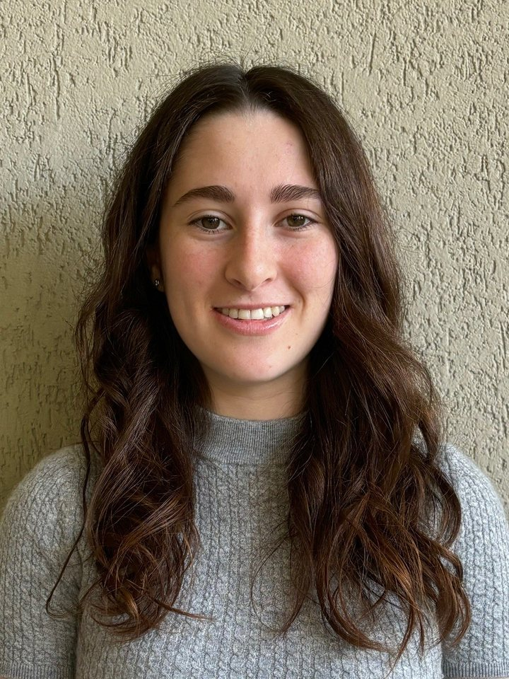
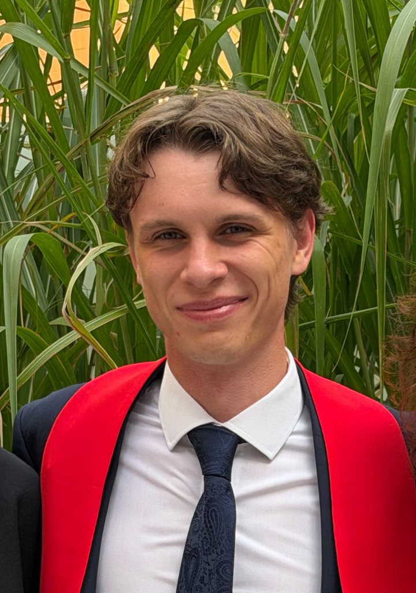
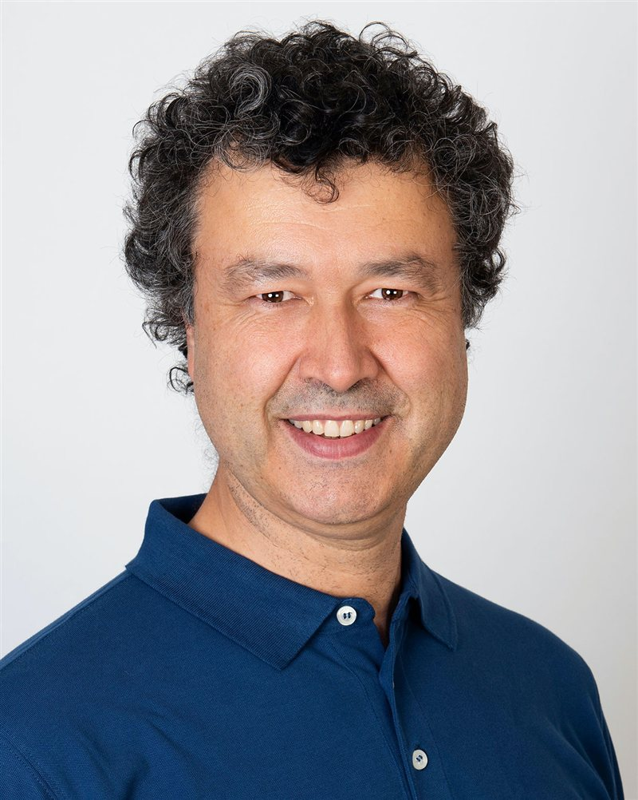
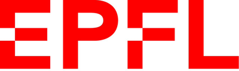
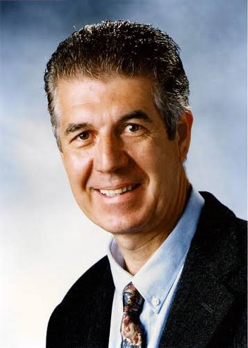

Engineers, clinicians and one shared goal
CareVix brings together engineering from EPFL and clinical expertise from the Geneva University Hospitals to make cervical cancer screening, triage and treatment possible close to the point of care.
Founders

Dalia Somekh
Co-founder · MSc Robotics, EPFL

Patrick Nolan
Co-founder · MSc Mechanical Engineering, EPFL
Supporters
Signal Processing Laboratory 5, EPFL

Prof. Jean-Philippe Thiran
Director of the Signal Processing Laboratory 5, EPFL
Alexandre Abbey
Signal Processing Laboratory 5, EPFL

Advisors
Geneva University Hospitals (HUG)

Dr. Pierre Vassilakos
Former Director of the Division of Gynaecological Pathology and the Centre for Cytology, HUG
Dr. Francesca Casalino
Department of Gynaecology, HUG
Dr. Ketty Hu
Department of Gynaecology, HUG